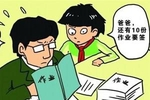
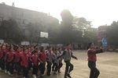

|
教育
|
新闻网 |
鼓励与规范并存 在线教育走向“口碑竞争”时代近年来，在线教育行业迅速发展，在线学习逐渐获得学生和家长的认可。“在线教育是教育服务的重要趋势，正成为中国经济新的增长点。”中国人民大学(分数线,专业设置)教育学院副院长李立国教授说。据预测，2020年中国在线教育市场规模将达4330亿元。然而，在线课程质量良莠不齐等问题也频频曝出。为促进在线教育健康规范发展，教育部等十一部门近日联合发布《关于促进在线教育健康发展的指导意见》，在线教育首次迎来了新“风口”。 |
|
|  | 评论：减负 为何遭到了激烈反对10月28日，浙江省教育厅会同省委网信办等14个部门联合起草《浙江省中小学生减负工作实施方案（征求意见稿）》。同样，引起了强烈的反弹。 减负，遭到了部分家长的激烈反对。虽然“南京家长已疯”此类网络热文对其中的矛盾和焦虑实际有所放大，不尽真实，仔细看南京规定，实际上也不是简单一刀切，但是背后反映了大家对个别地区减负一刀切做法的反弹与焦虑。 |
宿管阿姨圆教师梦：坚持和积累是她的自我成全宿管阿姨被邀在大学开写作课的事例再次表明，只要有梦想，人生就有无限可能。 “当老师是我以前的梦想，但后来我当了宿管。现在，很开心圆了老师梦。”——近日，一位宿管阿姨的圆梦经历引来热议。 |
|
逾五成儿童青少年是“小眼镜”教育部新闻通气会，介绍中小学健康促进行动有关情况。2018年全国儿童青少年总体近视率为53.6%，24个省份近视率超过50%。 |
|
评论：教育焦虑 拷问社会公平在底层群体的人生视野中，平等的教育，一直是他们头顶的那一缕阳光，脚下的那一级阶梯。教育能够促进阶层向上流动，改变穷人前途命运，助推社会公正平等。这是他们心中坚如磐石的信念。 教育的历史性变革和跨越式发展，带给人们无限的憧憬。然而，激烈的就学竞争，急剧的社会分化，也使人们对教育的功能陷入深深的困惑和迷茫之中。教育焦虑症，已经蔓延成为一种“社会流行病” |
|
亲子关系中最大的伤害是父母说“为你好”吗？今年有两部爆款影视剧，都因为亲子关系走红。一部是讲述成年人家庭关系的《都挺好》，一部是讲述孩子冲刺高考的《小欢喜》。 有时候，亲子关系是很多人内心的芒刺。一方面是孩子的抱怨，觉得父母控制欲太强，一方面是父母的不理解，“明明我是为你好，你怎么不懂良苦用心？” 关于亲子关系，纪伯伦曾说过，“你的孩子不是你的孩子，他们是出于生命自身的渴望所诞生的孩子。” 在畅销书《你的孩子不是你的孩子》里，记录了多个真实而残酷的亲子故事。有人坚信女儿患有多动症，直到她真的患上多动症；有人深藏秘密，却只能向家教老师倾诉；有人在母亲的管束下表现优异，但却会在深夜躲进厕所痛哭…… 这些父母，在儿女身上倾注了太多精力和心血。然而最终的结果，却还是一地鸡毛。如果说爱是人类最大的特异功能，那该如何去爱孩子呢？ |
|
|  | 阳光下奔跑——东坡区金花小学2019冬季运动会为推动“阳光体育”的开展，加强学校精神文明建设，丰富校园文化生活，提高金花小学的体育水平，11月7日上午九点， 东坡区金花小学冬季运动会在操场上隆重召开了。这次运动会的口号是“我阳光、我飞翔”，意寓孩子们在阳光下奔跑，梦想中飞翔。 |